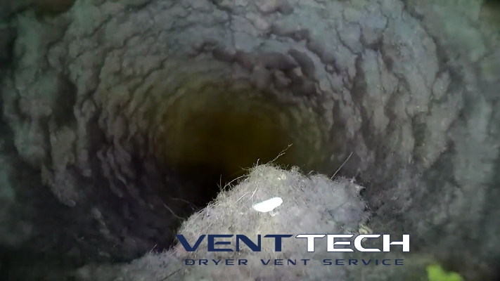
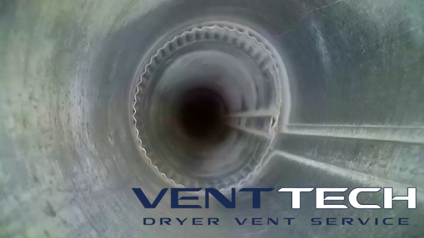

<template>
    <div class="page">
        <h2>Why Is A Clean Dryer Vent Important?</h2>
        <br>
            <div class="body">
                <p>
                    Cleaning dryer vents is one of the most important home maintenance 
                    requirements that most people forget about. Your lint trap is unable to 
                    stop every bit of lint and this lint will start to accumulate in your dryer 
                    exhaust, slowly causing it to restrict airflow. The main goal is to get all 
                    of the lint and debris out of the dryer vent so that it can function at its 
                    full capacity.
                </p>
                <br>
                
                <h4>Inside An Uncleaned Vent</h4>
                <br>
                <p> 
                    Is your dryer taking multiple cycles to dry your clothes? It could be your 
                    dryer vent. Dirty and clogged dryer vents make your appliance work harder to 
                    dry your clothes, wasting your time and money.
                </p>
                <br>
                
                <br>
                <h4>Same Vent - After Cleaning</h4>
                <br>
                <p>
                    Having your dryer vent cleaned once a year prevents your venting system from 
                    clogs which keeps your appliance running at maximum efficiency, saving you time 
                    and money!
                </p>
                <br>
                <h4>The Hazards</h4>
                <br>
                <p>
                    Dryer fires are one of the leading causes of residential house fires. Having a 
                    clean dryer vent ensures that lint will not act as kindling which will help the 
                    fire spread. Many dryer vents are not properly sealed and when a clog occurs the 
                    hot, moist air leaks through the seams of the vent which can cause mold in your 
                    walls and result in carbon monoxide being exhausted into your home if you have a 
                    gas dryer. 
                </p>
            </div>
    </div>
</template>